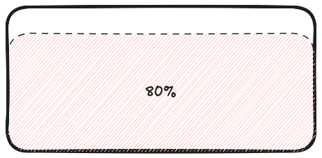
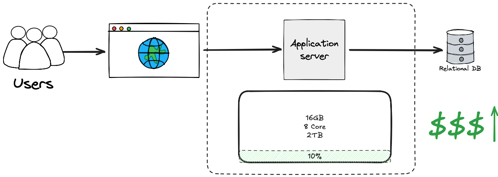
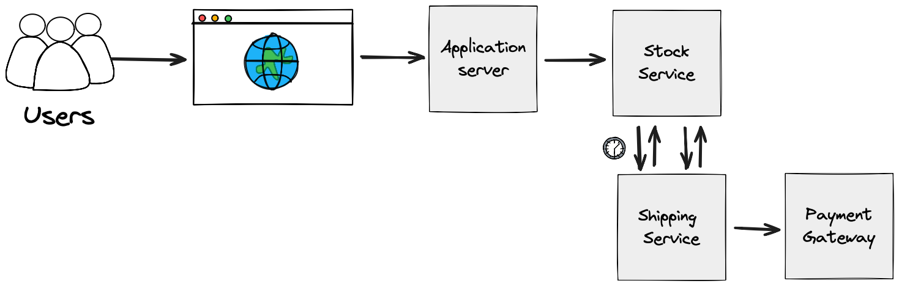

Design for Failure
Padrões de Resiliência
Luiz Schons
Quem sou eu?
- Luiz Schons
- Senior Software Architect/Engineer @ Vivaworks
- Canionista / Montanhista
- Atleta de CA
- BJJ
- DevParaná
- UTFPR
- schons.hashnode.dev
- Polyglot.ai & Golazzo
- Uma curiosidade…
Disclaimer
- Não sou especialista em nada
- Analise o cenário que você está
- Não existe bala de prata
- Estude e estude…
Vamos colocar isso na prática
A ideia revolucionária
Você tem uma ideia brilhante para um e-commerce que vai mudar o mundo.
O início modesto
- Um computador antigo como servidor
- Instalação de servidor web e banco de dados
- Início do desenvolvimento do site
Quem nunca começou assim? 😅
Seu super servidor
- 4GB de RAM
- Processador dual-core
- HD de 500GB
- Sistema operacional + Servidor web + Banco de dados
Parece até datacenter, não é mesmo? 🤣
Você ainda tem poucos usuários, então tudo funciona bem.
O sucesso traz novos desafios
Com o aumento de usuários, seu servidor local começa a mostrar sinais de sobrecarga.
Meu Deus, o que fazer?
É hora de repensar a infraestrutura: escalar para suportar mais usuários e garantir a continuidade do serviço quando falhas ocorrerem.
A Solução: Hardware mais potente
Investimento em um servidor dedicado com mais recursos computacionais.
Pronto!
Agora você tem um servidor potente e uma conta para pagar.
A solução funciona...
por enquanto
Mas você esqueceu de um "pequeno" detalhe: servidores precisam de manutenção constante.
E você não tem uma equipe de infraestrutura...
Super-herói da infra
- Instalação de atualizações de segurança
- Monitoramento de recursos
- Resolução de problemas técnicos
- Manutenção do banco de dados
Ah, e no tempo livre... desenvolver o seu e-commerce! 😰
Os pesadelos te assombram
- E se o servidor parar de funcionar?
- E se ocorrer uma queda de energia?
- E se o disco rígido falhar?
Meu negócio pode suportar esse risco?
E agora?
Um único servidor não é suficiente...
Precisamos de uma estratégia melhor!
Hora de escalar com alta disponibilidade
O próximo passo: múltiplos servidores para eliminar pontos únicos de falha e garantir que seu e-commerce esteja sempre disponível.
Arquitetura de Alta Disponibilidade
Infraestrutura robusta com servidor principal, backup e banco de dados separado — tudo configurado para continuar funcionando mesmo quando um componente falha.
Seu datacenter caseiro tem um problema
- Falta de monitoramento 24/7
- Vulnerabilidade a desastres físicos (incêndio, inundação)
- Riscos de segurança (roubo, invasão)
Sua sala não foi projetada para ser um datacenter profissional...
O custo oculto da "economia"
- Investimento crescente em hardware
- Horas intermináveis de manutenção
- Tempo precioso desviado do seu negócio principal
- Estresse constante com a infraestrutura
O barato sai caro... muito caro!
Precisamos de algo melhor
Uma solução que:
- Escale automaticamente conforme a demanda
- Ofereça alta disponibilidade sem dores de cabeça
- Permita foco no desenvolvimento do seu negócio
E qual seria a solução?
Alguém tem alguma ideia?
Quais opções temos hoje para:
- Escalar facilmente
- Reduzir manutenção
- Aumentar disponibilidade
- Focar no negócio
A resposta:
Cloud Computing
Migração da infraestrutura para provedores especializados em nuvem que oferecem:
- Infraestrutura como serviço
- Escalabilidade sob demanda
- Alta disponibilidade com garantias por contrato
- Redução de responsabilidades operacionais
Docker
- Encapsula aplicações
- Portabilidade total
- Deploy simplificado
- Infraestrutura como código
Curso gratuito de Docker
Fernanda Kipper no YouTube
Cloud: benefícios práticos
- Menos manutenção
- Escala automática
- Serviços gerenciados
- Backups automáticos
Foco no negócio, não na infraestrutura
Kubernetes
- Orquestra containers
- Gerencia réplicas automaticamente
- Garante disponibilidade dos serviços
O caminho para a resiliência está apenas começando...
Não estamos aqui para falar de infraestrutura
Mas sim de como projetar sistemas que sobrevivam quando as coisas dão errado
Porque, acredite, elas sempre dão! 😅
Voltando ao nosso e-commerce
Quais problemas podem ocorrer neste fluxo?
Pense em todos os pontos de falha possíveis...
Problemas que podem ocorrer
- Serviço de pagamento fora do ar
- Serviço de calcular frete fora do ar
- Ataque em algum endpoint do sistema
- Complexidade ao adicionar mais um serviço
Vamos entender esses problemas melhor
E como podemos projetar nossas aplicações para lidar com eles
Serviço de pagamento fora do ar
Como podemos lidar com isso?
Retry
Tente novamente após uma falha, aumentando gradualmente o tempo de espera entre tentativas:
Mas como que fazemos isso com código?
Conceitos universais, diferentes linguagens
Os padrões de resiliência funcionam em qualquer linguagem de programação
Vamos ver exemplos em duas plataformas diferentes:
PHP com Hyperf
TypeScript com NestJS
Mesmo problema, mesmos conceitos, diferentes implementações
Exemplo com PHP e Hyperf
namespace App\Service;
use Hyperf\Retry\Annotation\Retry;
use Hyperf\Retry\RetryBudget;
class PaymentService
{
#[Retry(delay: 1000, maxAttempts: 3)]
public function processPayment()
{
// make a remote call
}
}Exemplo com TypeScript e NestJS
import { Injectable } from '@nestjs/common';
import { Retry } from '@nestjs/axios';
import { catchError, delay, retryWhen } from 'rxjs/operators';
import { of } from 'rxjs';
@Injectable()
export class PaymentService {
@Retry({ delay: 1000, maxAttempts: 3 })
async processPayment() {
// make a remote call
}
}Mas o Retry tem um problema...
E se o serviço estiver completamente fora do ar?
Vamos ficar tentando sem parar?
Circuit Breaker
Interrompe chamadas a serviços com falhas, prevenindo sobrecarga do sistema

Como funciona?
Inspirado nos disjuntores elétricos:
- Fechado (normal): Permite as chamadas ao serviço
- Aberto (falha): Bloqueia chamadas após muitos erros
- Semi-aberto: Permite algumas chamadas para testar recuperação
Retry vs Circuit Breaker
Retry
- Tenta novamente após falha
- Bom para falhas temporárias
- Pode sobrecarregar sistemas
Circuit Breaker
- Evita chamadas a serviços falhos
- Bom para falhas persistentes
- Permite recuperação gradual
Funcionam melhor quando usados em conjunto!
Implementação em PHP com Hyperf
namespace App\Services;
use App\Gateway\GatewayServiceClient;
use Hyperf\CircuitBreaker\Annotation\CircuitBreaker;
use Hyperf\Di\Annotation\Inject;
class GatewayService
{
#[Inject]
private GatewayServiceClient $client;
#[CircuitBreaker
(
options: ['timeout' => 5000],
failCounter: 3,
successCounter: 1,
fallback: 'processPaymentFallback'
)]
public function processPayment()
{
// make a remote call
}
public function processPaymentFallback()
{
return 'Service unavailable';
}
}Implementação em TypeScript com NestJS
import { Injectable } from '@nestjs/common';
import { CircuitBreaker } from '@nestjs/axios';
@Injectable()
export class PaymentService {
@CircuitBreaker({
timeout: 5000,
fallback: () => 'Service unavailable'
})
async processPayment() {
// make a remote call
}
}Vocês perceberam algum padrão?
Algo comum nas duas implementações...
Fallbacks
O que são Fallbacks?
- Planos B para quando algo falha
- Podem ser simples mensagens ou lógicas alternativas complexas
É como levar um guarda-chuva mesmo quando o céu está limpo 🌂
Fallback em PHP
namespace App\Services;
use App\Gateway\GatewayServiceClient;
use Hyperf\CircuitBreaker\Annotation\CircuitBreaker;
use Hyperf\Di\Annotation\Inject;
class GatewayService
{
#[Inject]
private GatewayServiceClient $client;
#[CircuitBreaker
(
options: ['timeout' => 5000],
failCounter: 3,
successCounter: 1,
fallback: 'processPaymentFallback' // Nome do método de fallback
)]
public function processPayment()
{
// make a remote call
}
// Método executado quando um pedido é cancelado
public function processPaymentFallback()
{
return 'Service unavailable';
}
}Fallback em TypeScript
import { Injectable } from '@nestjs/common';
import { CircuitBreaker } from '@nestjs/axios';
@Injectable()
export class PaymentService {
@CircuitBreaker({
timeout: 5000,
fallback: () => 'Service unavailable' // Função inline de fallback
})
async processPayment() {
// make a remote call
}
}E quando temos múltiplos serviços?
Saga Pattern
Gerencia transações distribuídas em sistemas complexos
Saga Pattern + Fallbacks
Transações robustas com recuperação em cada etapa
Fallbacks
- Plano B
- Resposta imediata
Saga
- Transações distribuídas
- Compensação de erros
Implementação de Compensações
Quando algo falha, precisamos desfazer as operações anteriores
Compensação em PHP com Hyperf
orderId;
// Compensa as etapas anteriores (saga pattern)
$this->refundPayment($orderId);
$this->returnInventory($orderId);
$this->notifyCustomer($orderId, 'Seu pedido foi cancelado');
$this->logCancellation($orderId, $event->reason);
}
}Compensação em NestJS com RabbitMQ
import { RabbitSubscribe } from '@golevelup/nestjs-rabbitmq';
import { Injectable } from '@nestjs/common';
import { PaymentService } from '../services/payment.service';
import { InventoryService } from '../services/inventory.service';
import { NotificationService } from '../services/notification.service';
import { LoggingService } from '../services/logging.service';
@Injectable()
export class OrderCancelledListener {
constructor(
private paymentService: PaymentService,
private inventoryService: InventoryService,
private notificationService: NotificationService,
private loggingService: LoggingService,
) {}
@RabbitSubscribe({
exchange: 'order_exchange',
routingKey: 'order.cancelled',
queue: 'order-cancelled-queue',
})
async handleCancellation(msg: { orderId: number; reason: string }) {
// Compensação para cada etapa anterior (saga pattern)
await this.paymentService.refund(msg.orderId);
await this.inventoryService.restoreStock(msg.orderId);
await this.notificationService.notify(msg.orderId, 'Seu pedido foi cancelado');
await this.loggingService.logCancellation(msg.orderId, msg.reason);
}
}Veja como o padrão Saga funciona
Cada ação tem sua compensação correspondente
Outro problema comum:
API de Cálculo de Frete Indisponível
Cenário:
- Cliente está finalizando uma compra
- API de frete dos Correios está fora do ar
- Se não calcularmos o frete, perdemos a venda
Como lidar com esse tipo de problema?
Como podemos resolver isso?
Cache + Valores Default
Uma estratégia para lidar com serviços externos indisponíveis
Implementação de Cache
namespace App\Services;
use App\Shipping\ShippingServiceClient;
use Hyperf\CircuitBreaker\Annotation\CircuitBreaker;
use Hyperf\Di\Annotation\Inject;
class GatewayService
{
#[Inject]
private ShippingServiceClient $client;
#[CircuitBreaker
(
options: ['timeout' => 5000],
failCounter: 3,
successCounter: 1,
fallback: 'processCalculateShippingFallback'
)]
public function processCalculateShipping($order)
{
// Tenta calcular o frete usando a API externa
$shipping = $this->client
->calculateShipping($order);
// Salva o resultado em cache para uso futuro
$this->cacheShipping($order, $shipping);
// Retorna o resultado do cálculo
return $shipping;
}
// Método executado quando o circuito abre
public function processCalculateShippingFallback($order)
{
// Retorna um valor padrão ou cache com base no último cálculo
$cachedShipping = $this->getCachedShipping($order);
if ($cachedShipping) {
return $cachedShipping;
}
// Se não houver cache, retorna um valor padrão
return [
'price' => 40.00, // Valor fixo de frete
'deliveryTime' => '5-7 dias úteis', // Tempo de entrega padrão
];
}
}Resumindo o que aprendemos
Um sistema resiliente combina múltiplas estratégias
Outro problema comum:
Problema: Ataques ou Tráfego Excessivo
Endpoint de listagem de produtos sobrecarregado
Cenário normal: Poucos usuários
Endpoint GET /products responde rapidamente para cada usuário
Recursos do servidor são suficientes para atender a todos
Cenário problemático: Muitos usuários ou ataque
- Bots fazendo scraping da sua loja
- Ataque de negação de serviço (DDoS)
- Pico de tráfego em promoções
O servidor fica sobrecarregado e ninguém consegue usar o sistema
Solução: Rate Limiting
Limita o número de requisições que um cliente pode fazer em um período de tempo
Como funciona:
- Define limites por IP, usuário ou token
- Conta requisições em janelas de tempo
- Rejeita requisições quando o limite é atingido
- Retorna erro 429 (Too Many Requests)
- Retorna conteúdo cacheado para requisições repetidas
Implementação em NestJS
import { Injectable, NestMiddleware } from '@nestjs/common';
import { Request, Response, NextFunction } from 'express';
import { RateLimiterRedis } from 'rate-limiter-flexible';
@Injectable()
export class RateLimiterMiddleware implements NestMiddleware {
private rateLimiter: RateLimiterRedis;
constructor() {
// Configuração do rate limiter
this.rateLimiter = new RateLimiterRedis({
storeClient: redisClient,
points: 60, // Número de requisições permitidas
duration: 60, // Por minuto
});
}
async use(req: Request, res: Response, next: NextFunction) {
try {
// Usa o IP como identificador
const key = req.ip;
await this.rateLimiter.consume(key);
next();
} catch (error) {
// Limite excedido
const retryAfter = Math.round(error.msBeforeNext / 1000) || 1;
res.set('Retry-After', String(retryAfter));
res.status(429).json({
error: 'Muitas requisições, tente novamente mais tarde',
retryAfter
});
}
}
}Benefícios do Rate Limiting
- Protege contra ataques de força bruta
- Evita que um único cliente monopolize recursos
- Mantém o sistema disponível para todos os usuários
- Reduz custos de infraestrutura
Equilibra as cargas para um serviço mais justo
Mas e para adicionar novos serviços?
Como expandir nosso sistema sem quebrar o que já funciona?
Open/Closed Principle
Princípio Aberto/Fechado do SOLID
"Entidades de software devem estar abertas para extensão, mas fechadas para modificação."
Em outras palavras: adicione comportamentos sem mexer no código existente
Exemplo: Múltiplos provedores de frete
E se quisermos adicionar novos provedores além dos Correios?
Interface e implementações
// Interface comum para todos os provedores de frete
interface ShippingProviderInterface
{
/**
* Calcula o frete para um pedido
*/
public function calculateShipping(array $order): array;
public function trackShipment(string $trackingCode): array;
public function getName(): string;
}
// Implementação para os Correios (já existente)
class CorreiosShippingProvider implements ShippingProviderInterface
{
public function calculateShipping(array $order): array
{
// Lógica específica dos Correios
return [
'price' => 35.90,
'delivery_time' => '3-5 dias úteis',
'provider' => 'Correios'
];
}
// Outras implementações de métodos...
}
// Nova implementação para transportadora sem modificar código existente
class FastShippingProvider implements ShippingProviderInterface
{
public function calculateShipping(array $order): array
{
// Lógica específica da transportadora privada
return [
'price' => 45.90,
'delivery_time' => '1-2 dias úteis',
'provider' => 'FastShipping'
];
}
// Outras implementações de métodos...
}
// Factory que seleciona o provedor apropriado
class ShippingProviderFactory
{
private array $providers = [];
public function registerProvider(ShippingProviderInterface $provider): void
{
$this->providers[$provider->getName()] = $provider;
}
public function getProvider(string $name): ?ShippingProviderInterface
{
return $this->providers[$name] ?? null;
}
public function getAllProviders(): array
{
return $this->providers;
}
}Utilizando a factory
// Configuração da aplicação
$factory = new ShippingProviderFactory();
// Registramos todos os provedores disponíveis
$factory->registerProvider(new CorreiosShippingProvider());
$factory->registerProvider(new FastShippingProvider());
// Podemos adicionar novos provedores aqui sem modificar o código existente
$factory->registerProvider(new InternationalShippingProvider());
// Cliente escolhe qual provedor usar
$providerName = $_POST['shipping_provider'] ?? 'Correios';
$provider = $factory->getProvider($providerName);
// Calculamos o frete usando o provedor escolhido
if ($provider) {
return $provider->calculateShipping($order);
}
return [
'error' => 'Provedor de frete não encontrado',
'available_providers' => $factory->getAllProviders()
];
Benefícios do Open/Closed Principle
- Código mais estável e menos propenso a bugs
- Podemos adicionar novos provedores sem risco
- Testes existentes continuam válidos
- Facilita a manutenção e a extensão do sistema
Aplicando SOLID, ganhamos resiliência e flexibilidade.
Recapitulando
Quais padrões de resiliência vimos hoje?
Retry
Tentar novamente após uma falha, aumentando gradualmente o tempo de espera entre tentativas.
Circuit Breaker
Interromper chamadas a serviços com falhas persistentes, prevenindo sobrecarga e permitindo recuperação gradual.
Fallbacks
Planos B para quando algo falha, oferecendo alternativas em vez de deixar a operação falhar completamente.
Saga Pattern
Gerenciar transações distribuídas em sistemas complexos, com compensações para desfazer operações em caso de falha.
Cache + Valores Default
Armazenar resultados de operações para uso quando serviços externos estiverem indisponíveis, melhorando disponibilidade.
Rate Limiting
Limitar o número de requisições que um cliente pode fazer em um período, protegendo contra abusos e distribuindo recursos de forma justa.
Open/Closed Principle
Adicionar novos comportamentos sem modificar o código existente, aumentando a flexibilidade e reduzindo riscos.
Próximos passos
- Estude mais sobre padrões de resiliência
- Implemente esses conceitos em seus projetos
- Participe de comunidades e compartilhe experiências
Conclusão
- Falhas são inevitáveis
- Sistemas resilientes prevêm e se adaptam a falhas
- Combine diferentes padrões para maior robustez
- A resiliência deve ser parte do design inicial
Projete para falhar!
Obrigado!
Luiz Schons
Senior Software Architect